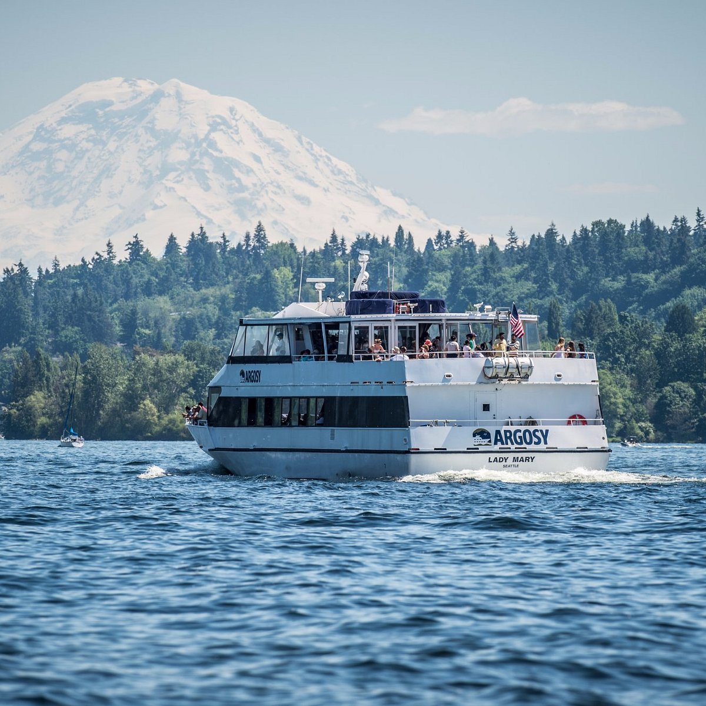

This year, Seattle officially unveiled its ambitous and expansive waterfront transformation. Today you'll encounter new landscaped and pathways, art-filled gathering spaces, and dramatic new viewpoints spanning beautiful Eliott Bay, from the sports staduims near Pioneer Square to Pike Place Market to Belltown. For vistors, this dramatic restoration of one of the city's most popular districts has be a complete game changer.
Argosy Cruises, which has been operating on the waterfront for more than 70 years, is thrilled to be part of the new waterfront experience. The company offers a variety of cruises, including sightseeing tours, dining cruises, and private charters, allowing guests to explore the stunning views of Seattle's skyline, the Olympic Mountains, and the Puget Sound. The cruises provide a unique perspective of the city and its surroundings, making them a popular choice for both locals and tourists. With the new waterfront enhancements, Argosy Cruises is excited to offer even more opportunities for visitors to connect with the natural beauty of Seattle and its waterfront.
"The New waterfront provides so many new and improved oppurtunites for connection," says Kevin Clark, CEO of Argosy Cruises Argosycrusies.com.
The Citys of seattle's office of the Waterfront, in collaboration with the community and Friends of Waterfront Park- the nonprofit that manages and stewards Waterfront Park- reimagined 17 blocks along Alaskan Way, Where elevated Alaskan Way Viaduct freeway has stood as a barrier between the waterfront and downtown until it was razed in 2019. Here are some of the exciting features to watch for as you explore.

Waterfront Park is a 20-acre park that stretches from Pioneer Square to Belltown, offering a scenic and vibrant space for both locals and visitors. The park features a variety of attractions, including the Seattle Aquarium, the Seattle Great Wheel, and numerous public art installations. It also includes walking and biking paths, picnic areas, and green spaces, making it a perfect spot for outdoor activities and relaxation. The park is designed to be accessible and inclusive, with amenities such as restrooms, seating areas, and play spaces for children. The park hosts various events throughout the year, including concerts, festivals, and community gatherings, making it a hub of activity and culture.
Waterfront Park is a must-visit destination for anyone looking to